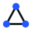

Learning experience
Follow the route.
Routes · recall · progress · browser and desktop UI

Concourse GitHubConcourse is an open-source, local-first system for building guided learning routes, practicing recall, and sharing portable course packs.
01 / Try the idea
Predict what crosses a membrane, watch the route respond, then open the pack that authored it. Nothing leaves your browser.
bacterial-cell-basics.learntpack
Prediction ready · 0 of 2 activities
Predict
Observe
Suggested bridge
Your answer or confidence suggests one short foundation before transport proteins.
Bridge · Charge and size
Sodium carries charge. Glucose is larger and polar. Both use membrane proteins instead of crossing the lipid core freely.
Apply
Open the route
One activity completed, two evidence results recorded, and the pack draft is ready to inspect.
Oxygen crosses the lipid bilayer more easily than glucose or sodium. Weak evidence can add a short charge-and-size bridge before the route returns to transport proteins.
Glucose uses a transport protein. Concourse packs describe concepts,
routes, activities, and evaluation in
pack.json, catalog.json,
courses.json, and items.json.
Adding a DNA side route changes the unpacked catalog and course draft before validation and export.
02 / Open by design
The application makes learning usable. The pack system makes routes portable, inspectable, and extensible.
Learning experience
Routes · recall · progress · browser and desktop UI
Open pack system
Contracts · validation · archives · local installation · authored content
03 / Contribute
Concourse has a working foundation and useful edges in every direction.
React UI, accessibility, learning flows, visualization, and interaction design.
02Sequencing, evidence, recall, progress, and the framework-independent core.
03Contracts, validation, SDK tooling, security boundaries, and import/export.
04Example packs, authoring guidance, templates, documentation, and open course material.
04 / Project truth